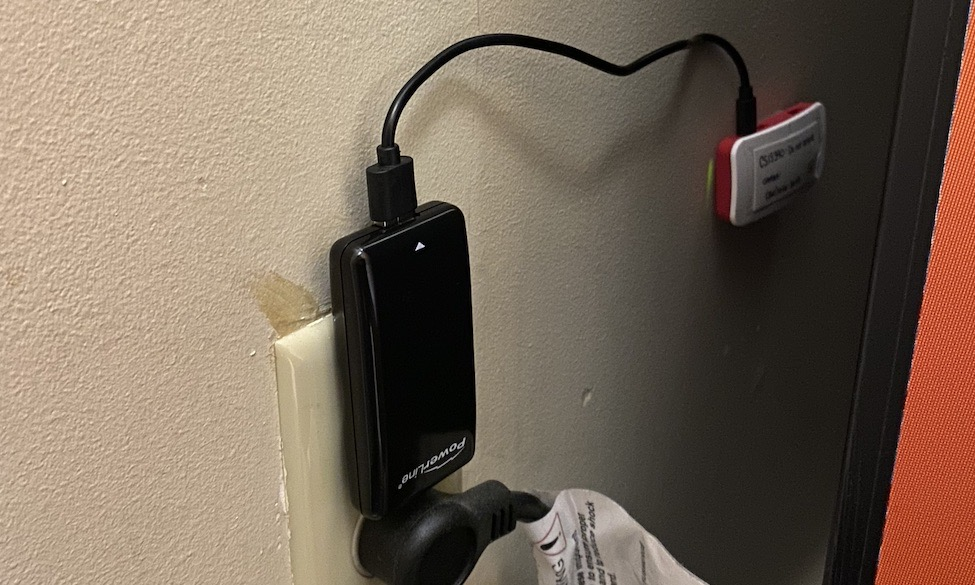
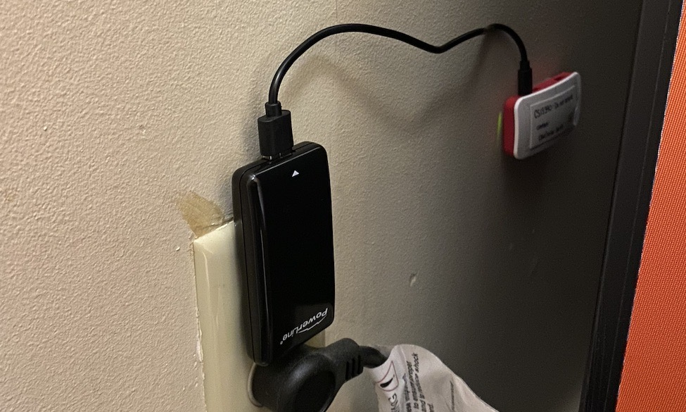
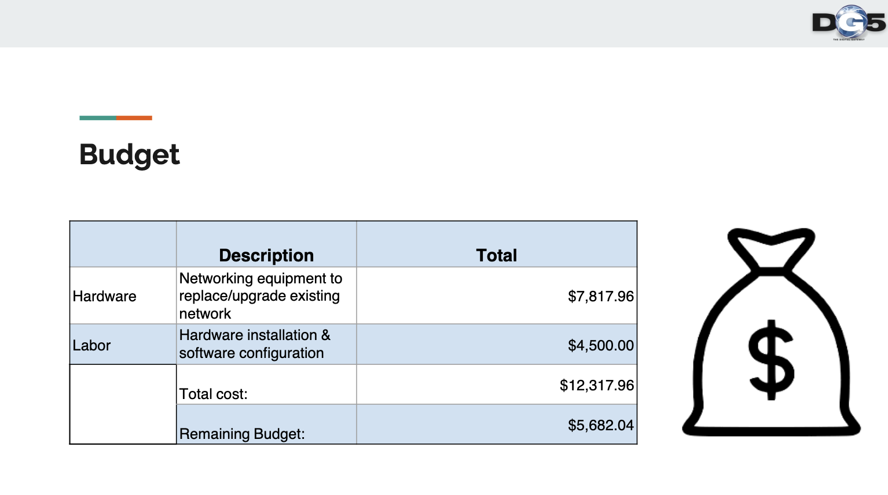
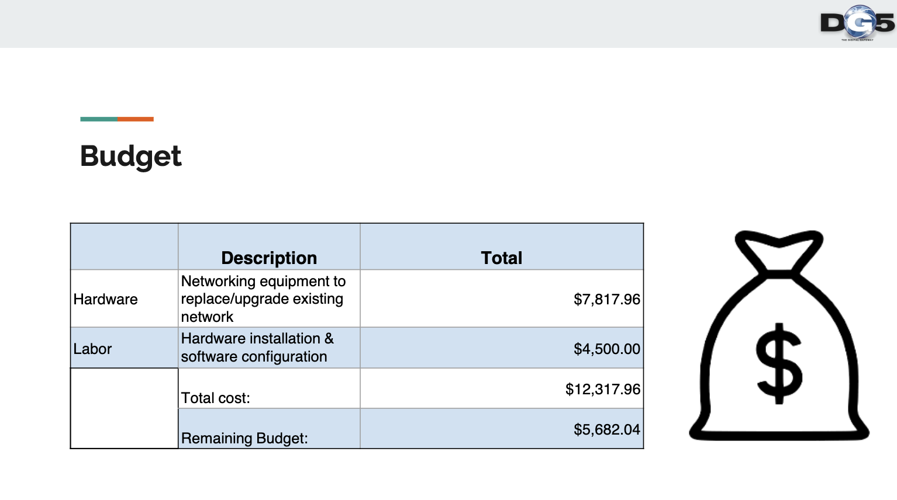

GFU Live
Emerging Mobile Technologies
View Project on GitHub
This project is based off the desire to know how busy study areas are around a college campus. The goal of the project was to create a user friendly website to show accurate readings of how many bluetooth devices are currently in a general area or building. This would present the user with knowledge of how busy a building was without having to be there.
This ‘busyness monitor’ kept the front-end server up to date and displayed how many bluetooth devices were located in the general area. The user could then access the UI and see raw numbers, statistics and busyness compared to other buildings. The raspberry pi zero’s bluetooth scanning functionally makes this possible by scanning for bluetooth devices which and logging their counts in a database with an offset to present accurate readings.
This project began with a loose outline to “build something IOT related”. My team and I created this idea and successfully completed it with outstanding results and a front-end designed that was loved and visited by many students and professors on campus.

 



 
